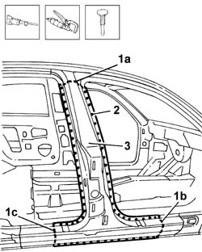
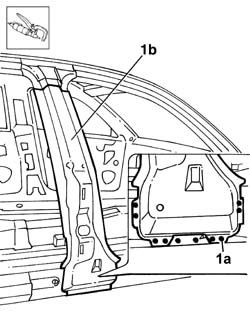
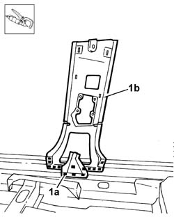
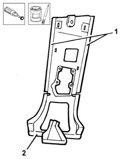
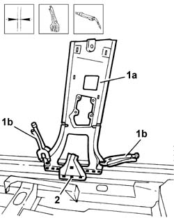
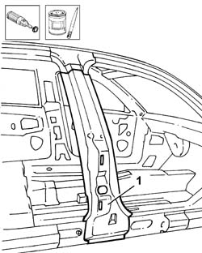
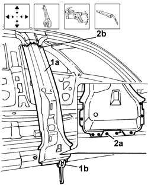
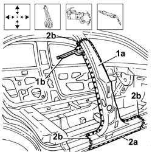

7210B10 CENTRE PILLAR
- Path
- Procedures > 72 panels and frames > 7210 REMOVING REFITTING > 7210B STRUCTURAL ELEMENTS (CENTRE AND REAR section) > 7210B10 CENTRE PILLAR
- Kind
- repair procedure (removal / refitting; the operation number is the code)
- Applies to
- all engines; all production periods
- Interactive page
- https://sloeber94.github.io/elrnDB-lThss/en/#/501036
Applies to: all engines; all production periods
Applies to: all engines; all production periods
 Removing
Removing
 Refitting
Refitting- Check whether the components connected are distorted through the bodyshell alignment measurements using suitable test equipment (test benches, templates or jigs).
- Carry out any bodyshell straightening operations before cutting the component.
1. Make the upper (1a) and side (1b) and (1c) cuts in the centre pillar using a power saw.
2. Remove the spot welds along the outer perimeter of the pillar.
3. Separate the pillar from the inner frame using a hammer and chisel and remove the actual pillar.

Applies to: all engines; all production periods
1. Remove the spot welds (1a) using a chamfering machine and remove the centre pillar reinforcement (1b).

Applies to: all engines; all production periods
1. Remove the spot welds (1a) along the lower base using a drill and chamfering machine and remove the inner lining (1b).

Applies to: all engines; all production periods
Refitting
Removing1. Remove the anti-corrosion treatment along the entire perimeter of the inner lining using a rotary brush.
2. Apply electro-galvanizing paint to the inner perimeter of the replacement part in contact with the vehicle bodyshell and the centre pillar reinforcement.

Applies to: all engines; all production periods
1. Position the inner lining (1a) and secure it using the self-locking clamps (1b).
- Check that the inner lining is correctly positioned.
2. Weld along the lower base of the inner lining.

Applies to: all engines; all production periods
1. Remove the anti-corrosion treatment from the entire inner and outer perimeter of the centre pillar reinforcement replacement part using a rotary brush and apply electro-galvanizing paint to the treated edges.

Applies to: all engines; all production periods
1. Position the pillar reinforcement (1a) and secure it using the self-locking clamps (1b).
- Check that the pillar reinforcement is correctly positioned.
2. Spot weld (2a) along the lower base and seam weld (2b) along the upper cut.

Applies to: all engines; all production periods
1. Position the centre pillar (1a) and secure it using the self-locking clamps (1b).
- Check that the pillar reinforcement is correctly positioned.
2. Spot weld (2a) along the outer perimeter and seam weld (2b) in the upper and side cuts in the pillar.

Applies to: all engines; all production periods
- Check that the welded components are correctly positioned.
- Level the spot welds using a disc grinder.
- Use a rotary brush to clean the inner and outer parts.
- Apply electro-galvanizing paint to the ground parts.